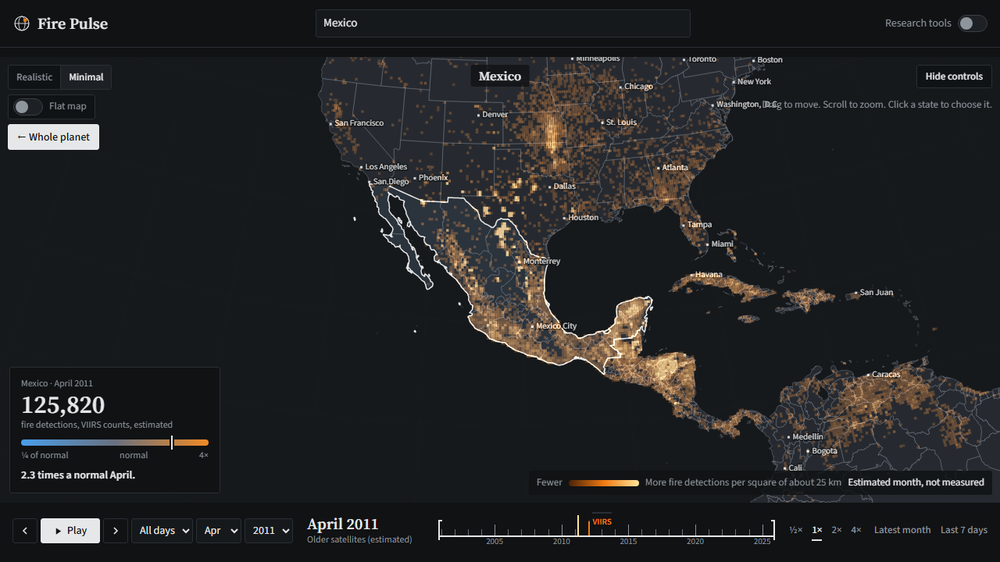

37
grados centígrados
=
98.6
grados Fahrenheit
En 2012 le pasó esto al registro de incendios de la NASA.
Fire Pulse · NASA Space Apps Challenge 2026
2011: 4.4 millones
2012: 21.9 millones
2024: 40.5 millones
2001 a 2011: los satélites viejos
2012: entra un satélite nuevo
2018: entra otro
Fire Pulse · detecciones de incendios por año, como las reportan los satélites de la NASA
Para saberlo hay que comparar con otros años. Probemos con el abril con más fuego que ha tenido México: el de 2011.
1
2
3
4
5
6
7
8
9
10
11
12
13
14
15
16
17
18
19
20
21
22
23
24
25
’11
más fuego
menos fuego
Fire Pulse · abriles de 2001 a 2025 en México, ordenados por detecciones de incendios (NASA FIRMS)
2001
2025
Barras oscuras: años estimados a partir de los satélites viejos. Barras brillantes: años medidos.
Fire Pulse · detecciones de incendios por año en el mundo

México, abril de 2011. El más alto de 25 abriles.
Vamos a la app.
Fire Pulse · cualquier país, estado o área dibujada en el mapa
El límite es 7 %: lo que difieren dos satélites idénticos.
548
millones de detecciones de la NASA, procesadas en una laptop
50
mil factores de conversión: uno por región, mes, día y noche
235
países y territorios
Fire Pulse · error medido en años ocultos, por región y mes
Terra
feb 2027
Aqua
sep 2027
Suomi NPP
nov 2026
NOAA-20
NOAA-21
2000
2010
2020
hoy
Fire Pulse · azul: satélites viejos (MODIS). Naranja: satélites nuevos (VIIRS). Fechas: NASA Science y NASA Earthdata, 2026
Fire Pulse
Gratis · código abierto · 235 países y territorios